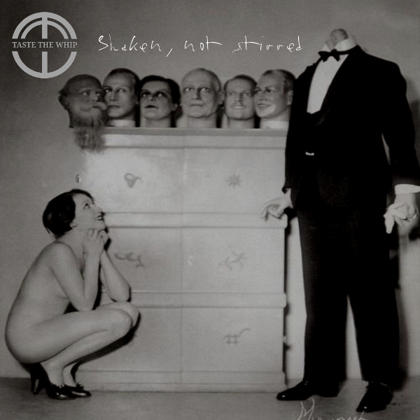

Track 01 · Shaken, Not Stirred
Supermarket Online Delivery Fiasco
Listen
Lyrics
Darkness will be falling soonThey said they'd be here before noonNo wonder I'm waiting like a loaded harpoon
I called the Samaratins, phoned a friendThe trail nearly came to a sticky endUp on the pavement and round the bend
Can you hear the sound of duelling banjos?Supermarket Online Delivery FiascoDid a detour all over Glasgow
The boy he must be having a laughMy seedless grapes are now grapes of wrathMy granny smiths rolling down the path
The frozen peas are frozen nae mairHe stares at me, I stand and stareThere'll be blood on the walls and blood on the flair!
Can you hear the sound of duelling banjos?Supermarket Online Delivery FiascoOh no, they forgot the tabasco!
My sweet potatoes turned up smashedHe looks at me and mouths 'namaste'I can only hope his tyres are slashed
They're sending replacements, he does bragIt's all for free, but there's a snagIt's 5 pence charge for each polly bag
Can you hear the sound of duelling banjos?Supermarket Online Delivery FiascoMy Beaujolais Nouveau tastes like a Bordeaux
© Derek Reid